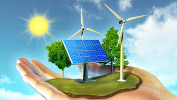

Las energías limpias, también conocidas como energías renovables o energías verdes,
son aquellas fuentes de energía que se obtienen de recursos naturales inagotables o que se regeneran a un ritmo igual o superior al de su consumo.
Estas energías se caracterizan por su bajo impacto ambiental en comparación con las energías fósiles, como el carbón, el petróleo y el gas natural.

TIPOS DE ENERGÍAS LIMPIAS
1.Energía Solar
Descripción:
Aprovecha la radiación solar mediante paneles fotovoltaicos para generar electricidad o colectores solares para producir calor.
Es ampliamente utilizada en todo el país debido a su alta radiación solar. Destacan estados como Baja California, Sonora, Chihuahua y Durango.
Plantas importantes incluyen la planta de energía solar en Villanueva, Coahuila, y el Parque Solar Villanueva en Viesca, Coahuila.
Ventajas:
Abundante, sostenible, y con tecnología en constante mejora. Ideal para áreas con alta exposición solar.
Desventajas:
Dependencia de las condiciones climáticas y el ciclo diurno-nocturno.
2.Energía Eólica
Descripción:
Utiliza la fuerza del viento para mover aerogeneradores que producen electricidad.
La mayor concentración de parques eólicos se encuentra en el Istmo de Tehuantepec, Oaxaca, que es una de las zonas con mayor potencial eólico del país.
También se están desarrollando proyectos en estados como Tamaulipas, Nuevo León, y Baja California.
Ventajas:
Baja huella de carbono y costes de operación relativamente bajos.
Desventajas:
Variabilidad del viento y posible impacto visual y en la fauna local.